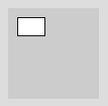
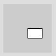
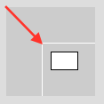
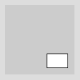
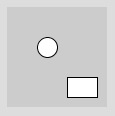
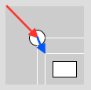

Wenn wir über Transformation reden, dann geht es darum, dass wir das, was wir zeichnen verschieben, vergrößern/verkleinern oder drehen wollen. Die ersten beiden Punkte haben wir bereits umsetzen können. Das Drehen haben wir noch nicht geschafft. Woran das liegt, schauen wir uns in den folgenden Abschnitten zur Transformation an.
Einführung am Beispiel der Translation
Eine Translation ist eine Verschiebung, zunächst mal im 2D-Raum. In Processing gibt es dafür den Befehl translate().
Nehmen wir ein Rechteck an einer bestimmten Position (10, 10).
// Unser Rechteck...
rect(10, 10, 30, 20);
Wenn wir das an Position (50, 50) zeichnen wollen, dann können wir (50, 50) als neue Koordinaten angeben.
Lösung 1:
// ...soll an Position (50, 50)
// Lösung 1:
rect(50, 50, 30, 20);
Lösung 2:
Wir lassen das Rechteck bei (10, 10) und "verschieben die Leinwand" 40 Pixel runter und 40 Pixel nach links - anders gesagt: wir verschieben die Leinwand um den Vektor (40, 40).
Analogie: Bild und Rahmen. Der Rahmen ist das Grafikfenster, das Bild ist das Koordinatensystem, das du verschiebst. Das kannst du mit dem Befehl translate() machen und gibst dort den Verschiebungsvektor (40, 40) an.
// Lösung 2: verschiebe erst Koordinatensystem um (40, 40)
// und zeichne dann
translate(40, 40);
rect(10, 10, 30, 20);Stell dir das wie folgt vor: erst wird die Leinwand um (40, 40) verschoben, dann wird das Rechteck an Position (10, 10) im verschobenen Koordinatensystem gezeichnet.

Der Vorteil?!? Du kannst ganze Bilder (oder Spielfiguren, Hindernisse, etc. ) verschieben! Erinnere dich an eine der ersten Übungen, wo man eine Figur an die Maus klebt? Man wählte einen Ankerpunkt (mouseX, mouseY) und definierte die anderen Koordinaten relativ dazu. Ziemlich umständlich:
// Zeichnung klebt an Maus 1
// Arbeit mit Offsets vom Ankerpunkt (mouseX, mouseY)
void draw() {
background(100);
// Haus:
rect(mouseX,mouseY+20,30,20);
triangle(mouseX,mouseY+20,mouseX+30,mouseY+20, mouseX+15,mouseY);
}Mit dem Befehl translate() kannst du das Bild auf das feste Koordinatensystem malen und später das gesamte Koordinatensystem bewegen, in diesem Fall mit translate(mouseX, mouseY):
// Zeichnung klebt an Maus 2
// Verschiebung des Koordinatensystems um (mouseX, mouseY)
void draw() {
background(100);
// Verschiebe Koordinatensystem zur Maus
translate(mouseX, mouseY);
// Haus:
rect(0,20,30,20);
triangle(0,20,30,20,15,0);
}Translationen können mehrfach durchgeführt werden. Dabei wird das Koordinatensystem (das "Bild") immer weitergeschoben. Nehmen wir wieder das Beispiel mit dem Rechteck:
translate(40, 40);
translate(10, 20);
rect(10, 10, 30, 20);
Wird "zwischendurch" etwas gezeichnet, wird immer die aktuelle Position des Koordinatensystems zugrunde gelegt.
translate(40, 40); // erste Verschiebung
ellipse(0, 0, 20, 20);
translate(10, 20); // zweite Verschiebung
rect(10, 10, 30, 20);
Das Koordinatensystem kann man sich auch als eine Art Schablone vorstellen, mit Hilfe derer ein Bild gezeichnet wird. Mit translate() wird die Schablone weitergeschoben.

// Zeichnung klebt an Maus
// Lösung durch Verschiebung des Koordinatensystems
void draw() {
background(100);
fill(255,100);
drawKoord(color(255, 0, 0));
translate(mouseX, mouseY);
drawKoord(color(0, 255, 0));
// Haus:
rect(0, 20, 30, 20);
triangle(0, 20, 30, 20, 15, 0);
// 50 Pixel nach rechts
translate(50, 0);
drawKoord(color(0, 0, 255));
ellipse(0, 0, 20, 20);
}
void drawKoord(color col) {
stroke(col);
strokeWeight(4);
line(0, 0, 10, 0); // x-Achse
line(0, 0, 0, 10); // y-Achse
strokeWeight(1);
stroke(0);
}WICHTIG: Sobald draw() beendet ist, wird das Koordinatensystem wieder an seinen "normalen" Platz gestellt mit (0,0) in der linken, oberen Ecke, d.h. das Bild sitzt also wieder bündig in seinem Rahmen, wenn draw() neu startet.
Objekt-Raum und Welt
Was genau ist eine Transformation? Wenn du ein Rechteck nimmst...
rect(0,0,50,30);... dann kannst du es z.B. verschieben:
translate(20, 20);
rect(0,0,50,30);Das bedeutet, dass z.B. der linke oberen Punkt jetzt nicht mehr bei (0, 0) liegt, sondern bei (20, 20). Eine Transformation ist also eine Abbildung (ein Mapping) von Punkten aus einem Ursprungsraum (wo das Rechteck ohne Transformation gezeichnet werden würde) in einen Zielraum. Wir nennen den Ursprungsraum auch Objektraum und den Zielraum einfach die Welt.
In grafischen Anwendungen zeichnest du ein Objekt (z.B. Spielerfigur oder Küchenschrank) zunächst im Objektraum und wählst dort einen günstigen Ursprungspunkt und Maßstab. Erst in der Applikation (z.B. Computerspiel oder Küchenplanungs-Tool) wird das Objekt zunächst skaliert, falls in der Welt ein anderer Maßstab herrscht, und dann an die richtige Position geschoben (Translation) und rotiert.
WICHTIG: Da du in den meisten Fällen um den Mittelpunkt eines Objekts rotieren willst und auch von der Mitte aus ein Objekt skalieren willst, setzt du den Ursprung in die Mitte deines Objekts.
Programmiertechnisch kannst du das deutlich machen, indem du den Zeichencode in eine Funktion auslagerst. Innerhalb der Funktion zeichnest du im Objektraum. Processing sorgt aber dafür, dass alle zuvor angegebenen Transformationen das Objekt korrekt "in die Welt" zeichnet:
void draw() {
background(100);
translate(mouseX, mouseY);
DrawHaus();
}
// Haus im Objekt-Raum
void DrawHaus() {
rect(0,20,30,20);
triangle(0,20,30,20,15,0);
}Problem Kollisionsberechnung: Ein Problem, das sich daraus ergibt, ist, dass verschiedene Objekte in verschiedenen Koordinatensystemen leben. Bei der Kollisionsberechnung muss man dies berücksichtigen.
Zusammenfassung
- Bei der Transformation wird nicht das Objekt, sondern der gesamte Raum transformiert.
- Eine Transformation ist eine Abbildung (ein Mapping) von Punkten aus einem Ursprungsraum in einen Zielraum.
- Ursprungsraum = Objektraum (object space) und den
- Zielraum = Welt (world space).
- Diese Abbildungen bzw. Mappings lassen sich auch in Form eine Matrix darstellen. Mithilfe einer Matrix lassen sich mehrere Transformationen leicht miteinerander kombinieren bzw. verrechnen.
- Eine Transformation ist eine Abbildung (ein Mapping) von Punkten aus einem Ursprungsraum in einen Zielraum.
- Der Vorteil der Transformation ist, dass man den Raum verschieben kann und dann innerhalb dieses Raums mehrere Objekte zeichnen kannm bevor man den Raum wieder zurücksetzt
- Das Ende des draw-Durchlaufs setzt die Transformation wieder zurück auf den Ursprung.